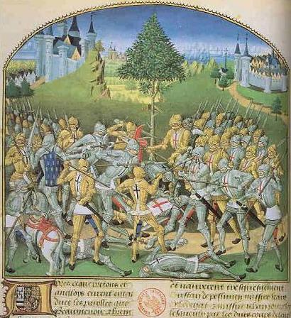
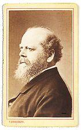
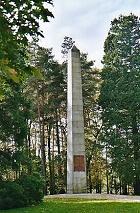

La Bataille des Trente
The Combat of the Thirty
Dialecte de Cornouaille
|
- précédée toutefois de celle d'une traduction française dans la "Revue de l'Armorique". Selon Luzel et Joseph Loth, cités (P. 389 de son "La Villemarqué") par Francis Gourvil qui se range à leur avis, ce chant historique ferait partie de la catégorie des chants inventés . A l'appui de cette thèse on peut remarquer que les 3 premières strophes du chant découlent de dictons sur les grêles du mois de mars que la muse populaire décline ainsi:
D'autres on trait au vent de mars:
Les méfaits de mars sont cependant tempérés par un autre dicton:
Un dernier dicton affirme en guise de "conclusion":
|
 |
However a French translation of the piece was published in 1843 in the "Revue de l'Armorique". According to Luzel and Joseph Loth, quoted by Francis Gourvil (p. 389 of his "La Villemarqué"), this historical song was " invented " by its alleged collector. In support of this thesis we may notice that the first 3 stanzas of the song stem from sayings on the hailstones of March that the popular muse declines as follows:
Others relate to the March wind:
The misdeeds of March are however tempered by another saying:
A last saying states as a "conclusion":
|
Ton
Mi majeur. Même mélodie que "Jeanne la Flamme" (Arrt.MIDI Chr. Souchon)
(Le fond sonore de la présente page est une variation sur le même thème)
| Français | English |
|---|---|
|
I
1.Le mois de mars, et ses marteaux ( les grêlons ) S'en vient frapper à nos carreaux; Les branches courbent sous la pluie, Et sous la grêle les toits plient... 2. Ce ne sont pas les seuls marteaux De mars qui frappent aux carreaux, Non pas la grêle seulement Qui frappe avec acharnement. 3. Non pas la grêle seulement, Ni la pluie qui tombe à torrents: Pire que la grêle et la pluie, Il y a les Anglais maudits! II 4. - Grand saint Kado, notre patron, Donnez-nous, pour que nous vainquions Les ennemis de la Bretagne La force et le coeur et la hargne! 5. Si du combat nous réchappons Nous jurons de vous faire don D'une ceinture, d'un gilet D'or, d'un manteau bleu, d'une épée! 6. Chacun dira vous regardant: "Saint Kado, comme il est puissant! Sur terre comme au paradis, Il n'est point de saint comme lui! " III 7. - Dis-moi, dis-moi, combien ils sont, Mon jeune écuyer, ces Saxons? - Combien ils sont? Je vais compter. En voilà six de ce côté; 8. - Combien ils sont? J'en ai vu six; Ces quatre autres là qui font dix. Avec ces trois-là qui font treize, Et ces trois autres qui font seize! 9. Mais j'en vois encore, il en reste: Un, deux, trois, quatre, cinq, six, sept. Et sept autres là-bas au bout... Seize et quatorze, trente en tout. [*] 10. - Ah, s'ils sont trente comme nous, Amis, allons-y pour le coup! Droit aux chevaux, à nos maillets, Qu'ils ne dévastent plus nos blés! - 11. Et les coups tombaient aussi drus Que sur l'enclume, tant et plus, En un ruisseau le sang coulait Aussi gonflé qu'après l'ondée. 12. Les armures étaient autant: Percées que loques de mendiant... Les cris des champions aussi clairs Que la voix de la grande mer. IV 13. La "Tête de Blaireau" disait A Tinténiac qui s'approchait: - De ma lance prends donc ce coup! Dis-moi si c'est un roseau mou! 14. - Ce qui sera bien ramolli Tantôt, c'est ton crâne, pardi, Où les corbeaux viendront gratter Et la cervelle picorer! - 15. Tout en continuant de parler Il assène un coup de maillet Qui comme un insecte écrasa Le casque et la tête à la fois. 16. Keranrais, en voyant cela, Se mit à ricaner de joie: - Si tous ils étaient comme lui Sûr, nous serions vite conquis! 17. - Brave écuyer, combien de morts? - Poussière et sang m'aveuglent fort! - Combien de morts, jeune écuyer? - Cinq...Six...Sept, si jai bien compté! - V 18. Depuis que le jour avait lui Ils luttèrent, jusqu'à midi. De midi jusque à la tombée De la nuit ils ont continué. 19. Et quand Robert de Beaumanoir S'écria : - Qu'on me donne à boire! - Du Bois alors lui répondit: - Tu as soif? Bois ton sang, ami! - 20. Et Robert, entendant cela, Tout honteux, reprit le combat. Et il tomba sur les Anglais: Cinq à lui tout seul en a tués! 21. - Dis-moi, dis-moi, mon écuyer, Combien en reste-t-il à tuer? - Seigneur, je m'en vais vous le dire... Deux, trois ou quatre... Six au pire! [*] 22. - Qu'on les épargne tout d'abord: Mais qu'ils nous payent cent sous d'or! Oui, cent sous d'or brillant chacun. Au pays ils le doivent bien! VI 23. De vrai Breton il n'y eut point Qui n'eût fêté dans Josselin Le retour des nôtres casqués De heaumes ornés de genêts. 24. Tous les vrais amis des Bretons, Ainsi que de leurs saints patrons, Tous saint Kado ils ont béni, Patron des guerriers du pays. 25. Tous ils ont acclamé bien haut Tous ils ont béni Saint Kado: "Sur terre comme au paradis, Il n'est point de saint comme lui! " Traduction Christian Souchon (c) 2008 [*] Strophes 7-9 et 21: selon Francis Gourvil qui considère ce poème comme forgé de toutes pièces, ces strophes sont imitées de la "Chanson de Roland basque", le "Chant d'Altabiscar" , où l'on voit un enfant chargé de dénombrer les adversaires avant et après la bataille. Ce chant comprend 8 strophes de 6 lignes. Il avait été publié avec une traduction dans le Journal de l'Institut historique en 1835 à l'appui d'un article d'Eugène de Monglave. Ce texte est d'ailleurs considéré, lui aussi, comme un faux de l'époque romantique. |
I
1.The month of March sends hammering boys ( hailstones ) To hit our doors with dreadful noise. Branches are bent by pouring rain. Under the hail roofs sag in pain. 2. Hammers of March are not alone In hitting our doors in that tone! As it is not the hail only That torments our roofs so sourly. 3. Not just the hail may cause such strain, O no, not just the pouring rain: Far more, far more, than rain or wind Have against us the English sinned! II 4. - Just give us strength and bravery Then we'll expel from Brittany Her enemies, with no hearts faint, Kado, who are our patron saint! 5. If in the combat we survive To give you presents we will strive: A girth, a vest of gold, a sword; A sky-blue coat we can afford. 6. All people as will look at you, O venerated Saint Kado, Shall say: "In Heaven and on earth None is to you equal in birth!" III 7. - My young squire, if you please, tell me, On the field, how many are they? - How many? Wait, I shall tell you Four of them here, over there two; 8. Well, of them how many are there? I go on counting with great care: Seven, eight, nine, eleven, twelve, And three others, all by themselves. 9. With others together they mix: Wait, one, two, three, four, five and six... Seven with this one,... eight, nine, ten... Five over there,.. Fifteen again! [*] 10. - Thirty of them, thirty of us! At them! At them! That's enough fuss! Each of us mount his horse and wield His mace! They'll stop spoiling our fields! - 11. Hits fell as thick, fast and evil, As hammer smites on an anvil. As copious and thick ran the blood As after rain the brooks in flood. 12. As impaired were the armours As rags and tatters of beggars, As wild were the cries of the knights As the breaking waves in the night. IV. 13. "Badger Head" to Tinténiac said When he saw him coming ahead: - Come on, of my good spear take heed! Tell me! Is it an empty reed? 14. - What's going to be empty soon, It is your skull, you thoughtless loon! Many a crow shall scratch it out, Many a raven peck about. - 15. He had not finished with his speech When his mallet had hit a breach Into the helmet, mashed the head, Like a snail upon which you tread. 16. Keranrais, who behold their joust, Laughing sarcastically burst out: - If all of them were like this one, The whole country were soon undone! 17. - How many of them are dead, squire? - I'm caught in a dust and blood mire! - How many dead, young squire, I said? - To be sure, five, six, seven dead! V 18. From the first glint of dawning light Till noon they went on with the fight, From noon till evening they kept on Combating the accursed Saxon. 19. Lord Beaumanoir cried suddenly: - I am thirsty! I am thirsty! - DuBois answered: - My friend for drink You have got blood enough, methinks! 20. When Beaumanoir heard him that say, He went back shamefaced to the fray, Rushed on the English still alive, And he killed a party of five. 21. - Tell me, young squire, nimble and deft, How many of them are there left? - Lord, I shall tell you presently: One, two, three, four, five, six only! [*] 22. - Those will be spared, aye, providing They'll pay a hundred gold shillings. A hundred shillings of blank gold To atone for the land they spoiled. VI 23. Whoever had in Josselin Failed to cheer our men returning With their helmets adorned with broom, Bretons had sent him to the tomb! 24. Whoever had not blessed Kado For whom they all beat a tattoo, No friend of the Bretons' could be, Nor of the saints of Brittany, 25. Whoever had failed to admire, To applause, to cheer, or to cry: " Kado, in Heaven and on earth, None is to you equal in birth!" Transl. Christian Souchon (c) 2008 [*] Stanzas 7-9 and 21: in Francis Gourvil's opinion (who considers this poem a forgery), these stanzas imitate the "Basque Chant of Roland", the "Altabizkarto kantua" featuring a boy made to count the enemies before and after the fight. This ballad consists of 8 stanzas of 6 lines. It was published with a translation in the Records of the Historical Institute in 1835 along with an article by Eugène de Monglave. This text is also considered a fraud. |
Cliquer ici pour lire les textes bretons (versions imprimée et manuscrite).
For Breton texts (printed and ms), click here.

|
Contexte historique
La mort sans héritier du Duc de Bretagne Jean III en 1341 plongea le duché dans 24 années de guerre civile où s'opposent en fait le roi d'Angleterre et la couronne de France par candidats à la succession interposés. Des deux branches rivales de la famille ducale, Charles de Blois est soutenu par Philippe VI de Valois et Jean de Montfort par Edouard III d'Angleterre. Ce qui fait de la Bretagne un des champs de bataille de la guerre de Cent Ans. Le conflit s'achève avec la victoire de Jean de Montfort en 1365 et le traité de Guérande qui l'instaure Duc de Bretagne sous le nom de Jean IV. Le Combat des Trente C'est un épisode de cette guerre de succession. Il opposa, le samedi 26 mars 1350 , trente Bretons du parti français de Charles de Blois, ayant à leur tête Jean de Beaumanoir qui était cantonné à Josselin , à autant de chevaliers et écuyers (20 Anglais , 6 Bretons et 4 Allemands - ou Flamands) de la garnison anglaise de Ploërmel , commandés par Richard de Brandebourg, anglicisé en Bembro(ugh) (nom assimilé par les Bretons à Pennbroc'h = "Tête de blaireau" !) . Alors qu'une trêve avait été proclamée à Calais depuis 1347, les Anglais ne cessaient de piller les paysans sur le territoire de Josselin. Beaumanoir riposta par un défi conforme à l'usage de la chevalerie: à l'exemple des trois Horaces et des trois Curiaces, la querelle serait vidée entre trente champions de chaque camp, près du chêne de Mi -Voie , à mi-chemin des deux villes distantes de 12 Km, à 45 Km au nord-est de Vannes. Il fut convenu que chaque champion combattrait à sa convenance à pied ou à cheval et avec les armes de son choix. Sur la miniature de Le Baud (cf. ci-dessus), on voit le chêne de Mi -Voie avec les deux forteresses. Les Bretons s'identifient par leur croix noire et les Anglais par une croix rouge sur fond blanc (cf. "L'épouse du Croisé" ). La scène représentée est celle de la mort de Bembrough, qui meurt d'un coup de lance et non d'un coup de maillet comme dans la ballade collectée par La Villemarqué. Le texte sous la miniature nous apprend les noms de quelques combattants bretons: Charruel, Geoffroy Poullart, Tristan de Pestivien, Karo de Bodegat et Jean Rouxelot. Divergences avec les récits français. Après un combat sanglant, au cours duquel un participant cria à son chef: "Si tu as soif, Beaumanoir, bois ton sang!", les chevaliers bretons reviennent vainqueurs à Josselin, en bénissant Saint Kado, leur saint patron. La soif de Beaumanoir s'explique, selon un poète français de l'époque cité par La Villemarqué, par le jeûne de Beaumanoir, un samedi de la semaine sainte: " A ce bon samedi, Beaumanoir si jeûna ". Par ailleurs le trouvère assure que Bembrough fut, non pas tué par un Tinténiac (deux Tinténiac participèrent au combat: ils s'appelaient Alain et Jean. Quant à Beaumanoir, il s'appelait Jean et non Robert), mais blessé à mort par Keranrais et achevé par Geoffroi du Bois. Il nous dit aussi que ce fut Beaumanoir et non Tinténiac qui défia Bembrough. Ce qui est certain, c'est que l'issue du combat ne régla rien et que les garnisons anglaises continuèrent à traiter la région en pays conquis. Ce qui condui(si)t nombre d'historiens à ne voir dans cet épisode qu'un "divertissement" macabre sans intérêt tactique, organisé par des militaires désoeuvrés, mais monté en épingle par la propagande française, qui n'avait pas aucune victoire véritable à célébrer. L'écrivain Pitre-Chevalier (1812 -1863) fulminera contre cette conception dans son essai "La Bretagne ancienne et moderne" paru en 1859, où il appelle de ses voeux la construction d'un mémorial grandiose sculpté, de préférence, par des ouvriers pour réduire la dépense! Le point de vue germanique.  L'état des mentalités 11 ans avant la guerre de 1870 est perceptible dans les commentaires ironiques ajoutés à ceux de La Villemarqué dans la traduction en vers allemands publiée à Cologne en 1859 par Moritz Hartmann (poète et romancier autrichien, 1821 - 1872) et Ludwig Pfau (écrivain, journaliste et révolutionnaire allemand, disciple de Proudhon, 1821, 1894):"Le barde qui composa ce chant immédiatement après la bataille appartient de toute évidence au parti français de Beaumanoir. Pourtant il ne se montre pas trop partial à l'encontre des Anglais commandés par Bembrough. Comme l'issue du combat fut favorable aux Français, il se trouva en France une multitude de poètes pour le célébrer, y voyant une occasion de souligner la vaillance des Français au détriment des Anglais, bien qu'il n'y ait eu que des Bretons dans le camps français, lesquels étaient alors tout à fait étrangers à leur pays et qu'on trouvât dans l'autre camp une minorité d'Anglais pour beaucoup de Flamands, leurs alliés dans cette aventure... L'authenticité de ce combat a longtemps été contestée. Le caractère archétypal qu'il revêt - qui rappelle les joutes des "Recken" (preux) des pays nordiques ainsi que les héros d'Homère -, conduisit à le faire considérer comme un mythe pendant longtemps. Mais la science moderne qui pratique le retour aux sources et a appris à lire avec attention les chroniques et les chants, montre de façon irréfutable que ce combat a bien eu lieu, et presque exactement de la façon décrite par le chant..." Suit une citation du chroniqueur Jean Froissart (1337 - 1400), et du poème, conservé à la Bibliothèque Nationale, cité par La Villemarqué: A ce "Bon Samedi", Beaumanoir si jeûna. Grand soif eut le baron, à boire demanda. Messire Geoffroy du Bois tantôt répondu a: -Bois ton sang, Beaumanoir,la soif te passera. Ce jour aurons honneur, chacun si gagnera. Vaillante renommée ja blâmé ne sera. - Tel deuil eut et tel ire que la soif lui passa. Les traducteurs font également une remarque judicieuse à propos du genêt dont se parent les vainqueurs et notent que c'est à cette pratique, inaugurée par Henri "Plantagenêt", que la dynastie anglaise doit son nom. Le monument de la Mi -Voie Le commentaire des traducteurs allemands s'achève par l'évocation du second monument commémoratif qui fut imaginé sous Napoléon mais érigé, à l'emplacement du chêne de Mi -Voie, le 11 juillet 1819. Il remplace une croix, évoquant la mémoire de Beaumanoir et des Trente, qui avait été détruite par la révolution. C'est un obélisque de 17 mètres, orné d'inscriptions où la fierté bretonne prend le pas sur la gloire royale: "Vive le Roi longtemps, les Bretons toujours! et "Postérité bretonne, imitez vos ancêtres. En réalité, ils ont mal lu et le monument est autant à la gloire de Louis-XVIII qu'à celle des chevaliers bretons: "Vive le Roi longtemps, les Bourbons toujours! Ici le 27 mars 1351, trente Bretons, dont les noms suivent, combattirent pour la défense du pauvre, du laboureur, de l'artisan et vainquirent des étrangers, que des funestes divisions avaient amenés sur le sol de la patrie. "Postérité bretonne etc... (suivent les 30 noms) "Sous le règne de Louis XVIII, roi de France et de Navarre..." Saint Kado (Cado, Cadou) - Fêté le 22 septembre "Possubl eo e vefe or sant Kado ar memez hini hag an hini e-neus savet abbati Llancarvan e Bro-Gembre (marvet eo war-dro 570). Ar zant a enorom e Breiz e-neus bevet 'giz ermid en enez-Kado er Morbihan. Hervez e vuhez, e-neus greet kalz pelerinachou. Anavezet eo 'giz patron ar c'hourinerien. " Ou, dans la langue de Molière: "Il n'est pas impossible que notre saint Kado soit le célèbre fondateur de l'abbaye de Llan-carvan au Pays de Galles (+ vers 577). Quoi qu'il en soit, celui que nous honorons en Bretagne fut ermite à l'Ile Cado (Morbihan). Sa vie en fait un grand pèlerin. Il est traditionnellement le patron des lutteurs. " Source: catholique-quimper.cef.fr Sa popularité lui vaut d'être invoqué dans trois chants du Barzhaz: outre le présent chant, on en parle dans "Le Faucon" et dans "La conversion de Merlin" . |
Historical background
In 1341 the death of the heirless Duke of Brittany, John III, triggered off a civil war in the duchy that was to last for 24 years and opposed in fact the kings of France and of England, each supporting his own candidate in two rival branches of the ducal house: King Philip VI of Valois backed Charles of Blois , whereas John of Montfort enjoyed the support of King Edward III of England. So Brittany became one of the battlefields in the Hundred Years War. The conflict ended with John of Montfort's victory in 1365 and the treaty of Guérande which made of him the Duke of Brittany, John IV. The combat of the Thirty It was an episode in the war of the Breton succession, when, on Saturday, 26th of March 1350 , thirty knights of the French party, who were quartered in Josselin and led by Robert of Beaumanoir , were confronted with as many knights and squires (20 English, 6 Bretons and 4 Germans - or Flemings) of the English garrison billeted on Ploërmel and commanded by Richard of Brandenburg, alias Bembro(ugh) ( "Bretonized" as Penn-Broc'h = "Badger head" !) . In spite of the truce proclaimed in Calais in 1347, the English had been going on looting the surroundings of Josselin. Beaumanoir riposted with a challenge in accordance with the rules of chivalry: following the example of the three Horatii and the three Curiatii, the quarrel was to be settled between thirty champions of each side, near the Mid-Way Oak , standing between the two towns (12 km apart, about 45 km North-east of Vannes). It was agreed that each champion would fight on foot, or horseback, which he found more convenient, and choose a weapon of his own. On Le Baud 's miniature (see above), we see the Mid-Way Oak with the two fortresses. The Bretons can be told by their black crosses and the English by their red crosses on a white background (see "The Crusader's wife" ). The picture represents Bembrough being stabbed with a lance by his antagonist and not knocked to death by a mallet like in the ballad collected by La Villemarqué. The text below the miniature gives us the names of some of the Breton warriors: Charruel, Geoffrey Poullart, Tristan of Pestivien, Karo of Bodegat and John Rouxelot. Differences with the French reports. After a bloody fight, during which one of the protagonists addressed his chief: "If you are thirsty, Beaumanoir, then drink your blood!", the Breton knights came victorious back to Josselin, blessing Saint Kado, their holy patron. Beaumanoir was thirsty, so explains a French poem of that time quoted by La Villemarqué, because he had fasted on Good Saturday: "A ce bon samedi, Beaumanoir si jeûna". Besides, according to Froissart, Bembrough was not killed by a Tinténiac, (there were two of them fighting on that day, Alan and John; and Beaumanoir's first name was John, not Robert), but wounded to death by Keranrais and finished off by Geoffrey DuBois. And it was Beaumanoir, not Tinténiac, who challenged Bembrough. Whatever was the outcome of the combat, it did not settle matters and the English garrisons went on acting all high and mighty in the country. Therefore many historians consider(ed) this fight a macabre "entertainment" devoid of any tactic significance, organized for the benefit of warriors at loose ends, but praised to the skies by the French propagandists who had no genuine victory to celebrate. The journalist Pitre-Chevalier (1812 - 1863) was to thunder forth against these views in his essay "Brittany, yesterday and today", published in 1859, where he suggests the erecting of a grandiose monument, preferably carved in huge stones by mere stone-cutters to reduce the costs! The German point of view The ironical comments added by the German translators to those of Villemarqué, are revealing of the frame of mind prevailing in the decade preceding the Franco-Prussian war. This translation was published in Cologne in 1859 by the Austrian poet and novelist Moritz Hartmann (1821 - 1872) and the German writer, journalist and revolutionary disciple of Proudhon, Ludwig Pfau (1821 - 1894): "The bard who composed this song soon after the combat, evidently belongs to the French party led by Beaumanoir. And yet, he is not exceedingly biased against the English and their leader Bembrough. Since the combat ended in favour of the French party, lots of French poets hurried to celebrate it, as it provided a pretext for extolling the courage of French warriors facing a Saxon platoon, even if there were on one side only Bretons, who were mere foreigners at the time, and on the other side a few English by far outnumbered by their Flemish allies in that venture... It has been doubted, for a long time, that this combat really occurred, on account of its archetypal character. It reminds of the jousts opposing the Nordic champions of old or the Homeric heroes and therefore was considered another myth. But modern science, advocating a return to basics, and prompting us in particular to read intently chronicles and ballads, demonstrates irrefutably that the battle did take place and was fought nearly in the way reported in the song..." Then comes an excerpt from the "Chroniques" of Jean Froissart (1337 - 1400), and from the poem kept at the National Library, quoted by La Villemarqué: On that Good Saturday, Beaumanoir had fasted. Dire thirst felt the Baron. So, he asked for drink. Sir Geoffrey Du Bois has answered him promptly: - Drink your blood, Beaumanoir, your thirst will be quenched. Today be a day of honour shared by all of us. Our fame as gallant men nobody shall dispute. - Such great shame and wrath he felt that his thirst vanished instantly. The translators also make an apt remark concerning the broom (French : "genêt" ) with which the victors adorn their helmets: this is the origin of the name given to Henry, the initiator of the English royal house of "Plantagenet". The Mid-Way Memorial  The comment of the German translators concludes with an evocation of the second memorial , a monumental obelisk devised under Napoleon but erected under King Louis XVIII, on 11 July 1819, where the Mid-Way oak stood, since the first one, a cross evoking Field Marshall of Beaumanoir and the Thirty was ruined by the Revolution. The 17 meter high obelisk bears inscriptions extolling the virtues of the Breton people, rather than the royal magnificence:"God give the King long life, the Bretons eternity" and Breton scions, let us tread in the steps of our elders!" In fact, the German writers were mistaken. The monument is as much in honour of King Louis XVIII as of the Breton knights of old. It reads: "God give the King long life, the Bourbons eternity! Here on March 27th, 1351, thirty Bretons whose names are given as follows, fought to defend the poor, labourers and craftsmen and they vanquished foreigners attracted on the soil of the Country by fateful dissents. "Breton scions etc...( the 30 names follow) "In the reign of Louis XVIII, King of France and Navarre..." Saint Kado ( Cado, Cadou) - Feast on 22nd of September "Possubl eo e vefe or sant Kado ar memez hini hag an hini e-neus savet abbati Llancarvan e Bro-Gembre (marvet eo war-dro 570). Ar zant a enorom e Breiz e-neus bevet 'giz ermid en enez-Kado er Morbihan. Hervez e vuhez, e-neus greet kalz pelerinachou. Anavezet eo 'giz patron ar c'hourinerien. " Or, in plain English: "Kado was possibly the celebrated founder of the Abbey of Llancarvan in Wales who died about 577. Anyhow, the monk honoured by the Bretons was a hermit who lived on Cado Island in the Morbihan Bay. He was known as a restless pilgrim. He is usually considered the patron saint of the wrestlers ." Source: catholique-quimper.cef.fr He enjoyed such great popularity among the folks that his services are called upon in three songs of the Barzhaz: beside the present song, he is mentioned in "The Hawk" and in "Merlin's conversion" . |
(Arrangt: Chr. Souchon)